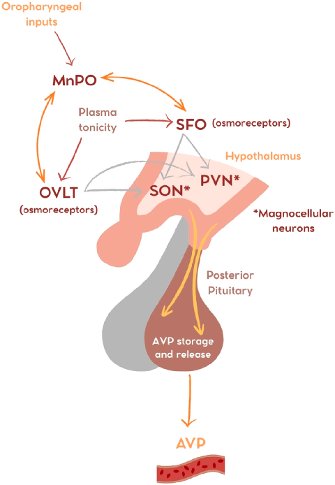
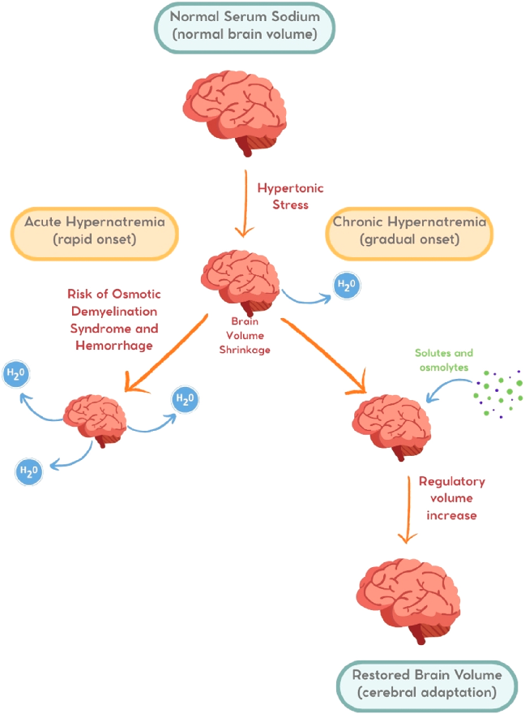
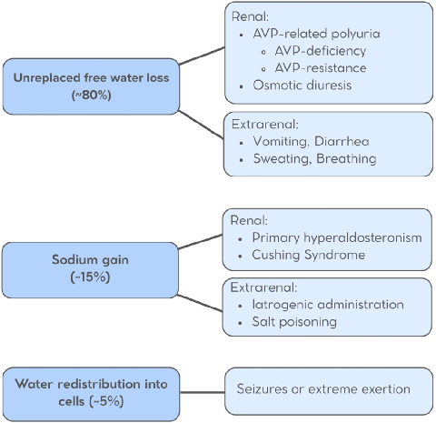

本ページで使用する略語一覧
| 略語 | 正式名称 — 日本語訳 |
| AVP | Arginine Vasopressin — アルギニンバソプレシン（抗利尿ホルモン） |
| AVP-D | AVP Deficiency — AVP欠乏症（旧称：中枢性尿崩症 / Central Diabetes Insipidus） |
| AVP-R | AVP Resistance — AVP抵抗性（旧称：腎性尿崩症 / Nephrogenic Diabetes Insipidus） |
| SFO | Subfornical Organ — 弓下器官（脳室周囲器官） |
| OVLT | Organum Vasculosum of the Lamina Terminalis — 終板血管器官 |
| MnPO | Median Preoptic Nucleus — 正中視索前核（口渇シグナルの統合核） |
| PVN / SON | Paraventricular / Supraoptic Nucleus — 室傍核 / 視索上核（AVP産生・分泌） |
| AQP2 | Aquaporin-2 — アクアポリン2（集合管主細胞の水チャネル） |
| V2R | Vasopressin V2 Receptor — バソプレシンV2受容体（腎集合管に発現） |
| TBW | Total Body Water — 体液総量 |
| ICF / ECF | Intracellular / Extracellular Fluid — 細胞内液 / 細胞外液 |
| Posm / Uosm | Plasma / Urine Osmolality — 血漿浸透圧 / 尿浸透圧（mOsm/kg） |
| RVI | Regulatory Volume Increase — 調節性容積回復（慢性高Na血症時の脳の適応機序） |
| SIAD | Syndrome of Inappropriate Antidiuresis — 不適切抗利尿症候群（旧：SIADH） |
| SGLT2 | Sodium-Glucose Cotransporter 2 — ナトリウムグルコース共輸送体2 |
| TPN | Total Parenteral Nutrition — 完全静脈栄養 |
| CVO | Circumventricular Organ — 脳室周囲器官（血液脳関門を欠く） |
| WNK1 | With-No-Lysine Kinase 1 — 細胞内浸透圧センサーとして機能するキナーゼ |
| ODS | Osmotic Demyelination Syndrome — 浸透圧性脱髄症候群 |
| MRI | Magnetic Resonance Imaging — 磁気共鳴画像法 |
SECTION 1 定義と病態の本質
高ナトリウム血症とは
高ナトリウム血症は血清Na濃度 > 145 mEq/L と定義される水代謝の障害であり、Naの過剰ではなく相対的な自由水（free water）の欠乏を反映する。高ナトリウム血症は常に高張性（hypertonicity）の状態を意味し、浸透圧差によって細胞内から細胞外への水移動が生じ、脳細胞が収縮する。
高ナトリウム血症は主に脱水（dehydration）の結果として生じる。自由水の喪失が先に細胞内液（ICF）から補われ、ECFの容量が維持されるため、低ナトリウム血症に比べて循環障害は来しにくい。しかし補正されなければ神経症状・脳出血・浸透圧性脱髄症候群（ODS）へと進展しうる。
SECTION 2 疫学 — 入院患者・ICU患者における頻度
入院患者での有病率と医原性要因
入院患者における高ナトリウム血症の有病率は患者集団・施設・カットオフ値によって異なるが、入院患者全体の約4〜7%に認められると報告されている。入院患者103例の後ろ向きコホートでは、86%が水分の自由摂取が制限されており、74%が腸管からの水分摂取が1 L/日未満であった。多くの症例で利尿薬使用に伴う腎の水保持障害も合併していた。
ICU患者では重症度マーカーにとどまらず、死亡率の独立した予測因子である（Naレベル・発症の速さに比例してリスク増加）。981例の重症成人を対象とした前向き観察研究では高ナトリウム血症が9%に認められ、うち入院時は2%・ICU在室中の発症が7%と、大多数は院内発症であった。この事実は医原性の関与を示唆する。
有病率
高Na血症発症率
水分制限あり（103例）
高リスク群と術前高ナトリウム血症
高齢者は加齢に伴う口渇感の低下により高ナトリウム血症のリスクが高い。米国の大規模人口ベース研究（190万人の成人入院患者、2000〜2018年）では、高ナトリウム血症患者は正常ナトリウム血症患者より高齢であり、入院中死亡のオッズは加齢とともに増加した。術前の高ナトリウム血症は主要冠動脈イベント・肺炎・静脈血栓塞栓症などのmorbidityおよびmortalityの増加と関連する（米国外科学会 全国外科品質改善プログラム コホート研究）。
ICU管理上のポイント： ICU在室中に発症する高ナトリウム血症の多くは医原性（不十分な水補充・高張輸液・乾燥した人工呼吸器など）であり、予防可能である。Na収支の注意深いモニタリングと輸液管理が重要。
急性 vs 慢性高ナトリウム血症
持続時間が48時間未満を急性、48時間以上（または推定上それ以上）を慢性と定義する。急性では、血清Naが軽度上昇しただけでも脳細胞が浸透圧変化に十分適応できず、重篤な神経症状をきたすことがある。慢性では脳細胞が調節性容積回復（RVI）によって適応するが、この状態から急速に血清Naを補正すると脳浮腫をきたす危険がある（詳細は第2章 SECTION 5 参照）。
SECTION 3 体液分布と血漿浸透圧
体液の分布と Na の役割
血清Na濃度は「有効浸透圧溶質（主にNaとK）の和 ÷ 体液総量（TBW）」によって決まる。TBWの約2/3が細胞内液（ICF）、残り1/3が細胞外液（ECF）を占め、水はほとんどの細胞膜を自由に通過して浸透圧平衡を保つ。ECFの浸透圧は主にNa塩（Na⁺・Cl⁻・HCO₃⁻）によって規定される。
血漿浸透圧（Posm）の正常値は275〜290 mOsm/kgであり、以下の式で推定できる：
mmol/L単位の場合：Posm = 2 × [Na⁺] + [Glucose] + [Urea]
重要な点として、尿素は細胞膜を自由に通過するため浸透圧（tonicity）に寄与しない。高ナトリウム血症は必ず高張性を意味し、細胞内から細胞外への浸透圧性水移動をきたす。
SECTION 4 AVP 分泌と口渇の調節機構
浸透圧感知と AVP 分泌の神経回路（Fig. 2）
生理的条件下では、血漿高張性がAVP分泌と口渇を刺激する。AVP分泌の浸透圧閾値は約280 mOsm/kgに設定されており、水・電解質バランス維持の第一防衛線として機能する。AVPは腎集合管主細胞のV2R受容体に作用し、AQP2を管腔側膜に挿入させることで水の再吸収を促進する。
AVP非依存性の水分喪失が継続した場合、口渇が第二の防衛機構として活性化される。この系は非常に強力であり、AVP欠乏症（AVP-D）でも水へのアクセスが保たれる限り、口渇によって血漿浸透圧をほぼ正常範囲に維持できる。
複数の脳領域が浸透圧感知・AVP産生・口渇調節を統合している（Fig. 2）。SFOとOVLTは血液脳関門を欠く脳室周囲器官（CVO）であり、血漿浸透圧の上昇を検知して脳室傍核（PVN）・視索上核（SON）のマグノセルラーニューロンにシグナルを伝え、後葉下垂体からのAVP放出を促す。口渇調節には正中視索前核（MnPO）も関与し、口咽頭からの迷走神経フィードバックで飲水時の満腹シグナルが調節される。

古典的には脳室周囲器官（CVO）の機械感受性膜タンパクが細胞外張性を感知すると考えられてきたが、近年の研究でWNK1（with-no-lysine kinase 1）がCVOニューロンの細胞内浸透圧センサーとして機能することが示された。マウスでのCVO特異的WNK1欠損実験では、水制限後のAVP放出が減弱し低張性多尿が生じた。WNK1はKv3.1カリウムチャネルを活性化し、このWNK1→Kv3.1軸がSFO・OVLTからPVN・SONへのAVP放出シグナルの電気生理学的基盤を形成すると提唱されている（Jin et al. J Clin Invest 2023）。
SECTION 5 高ナトリウム血症が脳に及ぼす影響（Fig. 1）
急性 vs 慢性 — 脳の適応機序（RVI）
高ナトリウム血症（高張性）では浸透圧差によって細胞から水が細胞外に流出し、脳容積が縮小する（Fig. 1）。急性高ナトリウム血症では脳細胞の迅速な適応が困難であり、神経細胞収縮・脳出血・ODS のリスクが高まる。
慢性高ナトリウム血症では脳細胞が調節性容積回復（RVI）を発動する。まず Na⁺・K⁺・Cl⁻ が細胞内に流入し、続いてタウリン・グルタミン・イノシトールなどの有機浸透圧物質（osmolytes）が蓄積されることで細胞容積が回復する。この慢性適応が完成した状態から急速に血清Naを補正すると、脳浮腫をきたす危険がある。

SECTION 6 3大機序の概要（Fig. 3）
高ナトリウム血症の3大病因
高ナトリウム血症の病因は3カテゴリーに分類される（Fig. 3）。口渇の知覚障害または水へのアクセス喪失がある場合、どの機序においても高ナトリウム血症のリスクが著しく増大する。

| 機序 | 頻度 | 代表例 |
|---|---|---|
| 自由水欠乏 Unreplaced free water loss |
〜80% | AVP-D、AVP-R、浸透圧利尿、消化管・皮膚・呼吸器からの水喪失、口渇障害・水アクセス喪失 |
| ナトリウム過剰 Sodium gain |
〜15% | 高張食塩水・NaHCO₃投与、透析液設定ミス、食塩中毒、原発性アルドステロン症 |
| 細胞内水移動 Water redistribution into cells |
〜5% | 痙攣発作、極度の運動（一過性・数分以内に消退） |
SECTION 7 AVP 欠乏症（AVP-D）— 旧称：中枢性尿崩症
AVP-D の定義・診断基準
AVP-D は視床下部-神経下垂体系の障害によりAVP分泌が低下する疾患群の総称である。AVP分泌が80〜90%以上低下すると低張性多尿（尿量 > 40〜50 mL/kg/24h、Uosm < 300 mOsm/kg）をきたす。Uosm が 300〜800 mOsm/kg の場合は部分型AVP-D または部分型AVP-R の可能性があり、精密評価が必要となる。
AVP-D では多尿・多飲が生じるが、水へのアクセスが保たれる限り口渇によってhydroelectrolytic balanceが維持される。しかし数時間でも水補充が妨げられると脱水・高ナトリウム血症が急速に進行する。デスモプレシン投与中の患者は急性疾患時に特に脆弱である（下記 注意点 参照）。
AVP-D の病因（Table 1 より）
| カテゴリー | 具体的な原因 |
|---|---|
| 外傷・手術 | 経蝶形骨洞手術・頭蓋内手術、減速外傷、放射線治療 |
| 腫瘍 | 頭蓋咽頭腫、胚細胞腫、髄膜腫、下垂体・視床下部への転移 |
| 血管性 | 大脳・視床下部の出血・梗塞、前交通動脈瘤、Sheehan症候群、鎌状赤血球症 |
| 感染性 | 髄膜炎、脳炎、結核、下垂体・視床下部膿瘍 |
| 肉芽腫性 | サルコイドーシス、Langerhans細胞組織球症、Erdheim-Chester病、多発血管炎性肉芽腫症 |
| 炎症・自己免疫 | リンパ球性漏斗下垂体炎、IgG4神経下垂体炎、抗AVPニューロン抗体、Guillain-Barré症候群 |
| 薬剤・毒素 | ヘビ毒、テトロドトキシン、フェニトイン、エタノール、免疫チェックポイント阻害薬、バソプレシン点滴の急速中止 |
| その他 | 水頭症、脳室・鞍上嚢胞、変性疾患、特発性 |
| 遺伝性 | AVP遺伝子変異（常染色体優性が最多）、Wolfram症候群（DIDMOAD：WFS1遺伝子変異）、Schinzel-Giedion症候群、Webb-Dattani（WEDAS）症候群など |
デスモプレシン誘発性低Na血症への対応 — 重要な臨床上の落とし穴
デスモプレシンを突然中止しない： デスモプレシン投与中に低ナトリウム血症を認めた際、薬剤を中止すると急激な水尿（aquaresis）が生じ、血清Naが急速補正される。15例の多施設ケースシリーズ（Achinger et al. 2014）では、デスモプレシン中止 + 食塩水投与群で48時間の補正量が平均 〜37 mEq/L に達し、ODSが69%・死亡が23%に認められた。一方、デスモプレシンを継続したまま3%NaCl で補正した群では補正量が 〜11 mEq/L / 48h に制御され、良好な転帰であった。
推奨：デスモプレシン誘発性低Na血症では薬剤を継続し、高張食塩水 + 厳密な血清Naモニタリングで管理する。
SECTION 8 AVP 抵抗性（AVP-R）— 旧称：腎性尿崩症
AVP-R の定義と後天性・遺伝性病因
AVP-R はAVP の抗利尿作用に対する腎感受性の低下であり、AVP-D と類似した生理学的変化（低張性多尿）をきたす。口渇は一般的に保たれており、水へのアクセスが制限されない限り代償性多飲によってhydrationが維持される。AVP-D との本質的な違いは循環 AVP レベルが正常〜高値（AVP-D では低値〜測定不能）という点にある。
| カテゴリー | 具体的な原因 |
|---|---|
| 薬剤性（最多） | リチウム（最多）、デメクロサイクリン、シスプラチン、アミノグリコシド、アンホテリシンB、メトキシフルラン、セボフルランなど |
| 代謝性 | 高カルシウム血症、低カリウム血症 |
| 全身疾患浸潤 | アミロイドーシス、サルコイドーシス、Sjögren症候群、ヘモクロマトーシス、多発性骨髄腫 |
| 血管性 | 腎梗塞、鎌状赤血球症 |
| 機械的 | 多発性嚢胞腎、尿管閉塞 |
| 遺伝性（X連鎖） | AVPR2遺伝子変異（全症例の約90%） |
| 遺伝性（常染色体） | AQP2遺伝子変異（常染色体劣性または優性） |
SECTION 9 妊娠性 AVP 関連多尿（旧称：妊娠性尿崩症）
胎盤 vasopressinase によるAVP過剰分解
妊娠中のAVP低下は、胎盤酵素（placental vasopressinase）による循環AVP の加速的代謝分解によって生じる。この酵素は妊娠7週頃から産生され、胎盤質量とともに増加し、妊娠後期〜第3三半期後半に最高値に達する。症状（多尿・多飲）はこの時期に最も顕著となり、分娩後4〜6週でvasopressinaseが低下するとともに症状が消退する。
臨床像はAVP-D に類似するが、一部症例では腎のAVP抵抗も合併し、鑑別が困難になる。デスモプレシン投与が鑑別に有用であり、vasopressinase媒介性であれば症状改善が見られるが、真の腎性抵抗型では改善しない。
SECTION 10 AVP 関連多尿3型の比較・鑑別（Table 2）
AVP-D / AVP-R / 妊娠性 — 診断アプローチと治療
| 特徴 | AVP-D （旧：中枢性尿崩症） |
AVP-R （旧：腎性尿崩症） |
妊娠性AVP関連多尿 |
|---|---|---|---|
| 基本病態 | 視床下部-神経下垂体障害によるAVP分泌低下 | 腎のAVP感受性低下（AVP は正常〜高値） | 胎盤vasopressinase によるAVP過剰分解（または腎性抵抗） |
| 血漿AVP / Copeptin | 低値〜測定不能 | 正常〜高値 | 低値（酵素分解増加） |
| デスモプレシン反応 | 完全型：Uosm > 50% 上昇 | 最小限〜無効 | vasopressinase型は有効 腎性抵抗型は無効 |
| 発症時期 | 小児〜成人（病因依存） | 遺伝性：新生児期〜乳幼児期 後天性：任意の年齢 |
妊娠後期〜第3三半期 分娩後4〜6週で消退 |
| 高Na血症リスク | 高（水制限時） | 高（水制限時） | 中等度（母体・胎児リスクあり） |
| 診断ゴールドスタンダード | 浸透圧刺激後 Copeptin < 4.9 pmol/L MRI下垂体後葉輝点消失（感度・特異度低め） |
浸透圧刺激後 Copeptin > 21.4 pmol/L 遺伝子検査 |
妊娠歴 + Copeptin + デスモプレシン反応 |
| 治療 | デスモプレシン、原疾患の治療 | 低溶質食、サイアザイド ± アミロライド、NSAIDs 原因薬剤の中止；遺伝子治療（研究段階） |
デスモプレシン（妊婦に安全） 産科的合併症の管理 |
SECTION 11 浸透圧利尿による腎性水喪失
浸透圧利尿のメカニズムと主な原因
浸透圧利尿は尿細管腔内の浸透圧活性溶質の存在により大量の尿が排泄される病態である。AVP 依存性の水再吸収とは対照的に、尿浸透圧の上昇は溶質駆動性の水喪失を反映する。管腔内溶質濃度が上昇すると水再吸収に必要な浸透圧勾配が失われ、自由水が排泄されて高ナトリウム血症リスクが高まる。
| 原因溶質 | 臨床文脈 | ICU での注意点 |
|---|---|---|
| マンニトール | 頭蓋内圧亢進・高容量血症の治療に使用 | 水・電解質喪失が著明。水補充量を慎重に設定し高Na血症を防ぐ |
| 尿素 | ATN回復期・尿管閉塞解除後；SIAD の慢性治療 | ICU患者では ATN 回復期に浸透圧利尿性高Na血症が生じうる |
| 高血糖 / SGLT2阻害薬 | 糖尿病性ケトアシドーシス、SGLT2i投与時 | グルコースが浸透圧溶質として機能。水補充不十分で血清Naが上昇 |
SGLT2阻害薬はSIAD関連慢性低ナトリウム血症の治療として現在研究されているが（empagliflozinのランダム化試験）、SGLT2i 後の高ナトリウム血症は比較的稀とされる。
SECTION 12 腎外性水喪失（消化管・皮膚・呼吸器）
腎外性水喪失の経路と特徴
腎外性水喪失ではAVP分泌・機能は保たれており、尿は適切に濃縮される（高Uosm）。これが腎性水喪失との重要な鑑別点となる。
| 経路 | 高Na血症につながる機序 | 代表的状況 |
|---|---|---|
| 消化管 | 嘔吐・胃吸引：低電解質性水喪失 / 浸透圧性下痢（ラクツロース・ロタウイルス）：低Na/K → 自由水喪失 / 分泌性下痢（コレラ・VIPoma）：血漿に近い電解質濃度 → Na変動少 | 胃吸引、下痢 |
| 皮膚 | 発汗浸透圧は約120 mOsm/kg（血漿の約半分以下）と低張性。補正されなければ高Na血症を誘発。熱傷では体表面積に応じた大量の自由水喪失が生じる | 発熱、熱環境、激しい運動、広範熱傷 |
| 呼吸器 | 通常は代謝性水産生で相殺されるが、過換気・加湿なし人工呼吸器では相当量の呼吸性水喪失が生じる | 加湿不十分な機械的換気、hyperpnea |
発汗の浸透圧：発汗の浸透圧は約 120 mOsm/kg と血漿（約285 mOsm/kg）の半分以下である。補正されない発汗が続けば高ナトリウム血症を誘発する。
SECTION 13 口渇障害と高リスク群
口渇が失われるとどうなるか
口渇の知覚障害（hypodipsia）または水へのアクセス喪失がある場合、あらゆる水喪失機序が高ナトリウム血症に直結する。口渇はAVP とともに高ナトリウム血症に対する最強の防衛機構であり、これが失われると他の代償機構だけでは対応できない。
| 高リスク群 | 機序 |
|---|---|
| 高齢者 | 加齢による口渇感の低下（最多の危険因子） |
| 認知症患者 | 口渇認知の低下・水の飲み方を忘れる |
| 抗精神病薬・抗コリン薬服用中 | 薬剤による口渇感の抑制 |
| 乳幼児 | 水へのアクセス依存性が高く、口渇の言語表現が困難 |
| 挿管・鎮静患者 | 意識障害・人工呼吸器による経口摂取不可。鎮静による口渇抑制 |
| 意識障害患者 | 適切な水摂取行動をとれない |
原発性口渇低下症（Adipsic Hypernatremia）
浸透圧受容体障害による原発性口渇低下症（adipsic hypernatremia）は、視床下部の構造的病変（全前脳症・頭蓋咽頭腫・胚細胞腫など）に最も多く関連する。AVP-D をきたす病変より吻側（rostral）に位置することが多い。これらの患者では脳幹から視床下部への求心性経路が一般的に保たれているため、血液量低下・血圧低下に対するAVP反応と腎の尿濃縮能は正常であることが多い。
近年、視床下部-下垂体領域に明確な構造的異常を認めない浸透圧受容体障害例が、弓下器官（SFO）またはNa感知チャネルNa(x)に対する抗体形成に関連して報告されている。SFO 免疫反応陽性患者はプロラクチン高値が多い。一部症例では急速発症型肥満・視床下部機能障害・低換気・自律神経障害症候群（ROHHAD/NET 症候群）が合併する。
SECTION 14 ナトリウム過剰負荷（約15%）
ナトリウム過剰による高ナトリウム血症
Na 過剰による高ナトリウム血症は Na の摂取・投与が腎の排泄能を超えた場合に生じ、ほぼ常に急性経過をたどる。血漿Na濃度の急激な上昇は著明な高張性をきたし、細胞内から細胞外への水移動を誘発する。未治療では ODS・神経細胞萎縮から不可逆的脳障害に至る。
| カテゴリー | 具体的な原因 |
|---|---|
| 医原性輸液 | 3%高張食塩水（頭蓋内圧管理・重症低Na血症）、NaHCO₃（代謝性アシドーシス）、低張消化管・腎喪失に対する0.9%食塩水の不適切な補充、透析液のNa濃度設定ミス |
| 食塩中毒 | 海水溺水（小児）、家庭内偶発事故、精神疾患（Munchausen症候群）による意図的食塩摂取、乳児用粉ミルクへの食塩混入、文化的慣行（新生児への食塩塗布：経皮吸収による高Na血症の報告例あり） |
| 栄養管理 | 完全静脈栄養（TPN）・高タンパク経腸栄養（水補充が溶質負荷に追いつかない場合）；手術中の高張灌流液の体内吸収 |
| 内分泌疾患 | 原発性アルドステロン症・高コルチゾール症（Cushing症候群）：腎でのNa再吸収が水分排泄より相対的に過剰 → 血清Na 143〜147 mEq/L の軽度慢性高Na血症（重篤な神経症状は通常ない） |
ICU 実践上のポイント： 頭蓋内圧管理目的での3%食塩水投与中は血清Naを定期モニタリングする。NaHCO₃大量投与時も著明なNa負荷になりうる。低張消化管・腎喪失に0.9%食塩水を大量投与すると相対的Na過剰を招くことに注意。
SECTION 15 細胞内水移動（約5%）— 一過性の高ナトリウム血症
痙攣・極度の運動による一過性高Na血症
細胞内への水移動による高ナトリウム血症はまれで一過性（数分以内に消退）である。細胞内の浸透圧物質が急速に増加することで血漿から細胞内への水移動が生じ、血清Naが一時的に上昇する。
| 原因 | メカニズム |
|---|---|
| 痙攣発作 | 強力な細胞代謝により細胞内浸透圧物質が急増し、水が細胞内に引き込まれる |
| 極度の運動 | 急性細胞異化（横紋筋融解を伴うマラソン競技者など）でラクテート・代謝産物が増加し細胞内浸透圧が上昇 |
臨床的には、痙攣後に高ナトリウム血症を認めた場合、一過性の水移動による一時的高Na血症の可能性と、その背景にある低ナトリウム血症の可能性（症候性低Na血症が痙攣を誘発したケース）の両方を考慮する。
SUMMARY 高ナトリウム血症の病態生理と病因 — キーメッセージ
出典：Drummond JB, Freitas LGO, Freitas IS, Romanowski RM, Soares BS. Pathophysiology and aetiologies of hypernatremia. Best Practice & Research Clinical Endocrinology & Metabolism. 2026;40:102064. Available online 25 October 2025.
DOI：https://doi.org/10.1016/j.beem.2025.102064
本資料は教育目的で作成したサマリーです。診断・治療方針の決定には必ず原典を参照してください。
制作：ICU 関谷